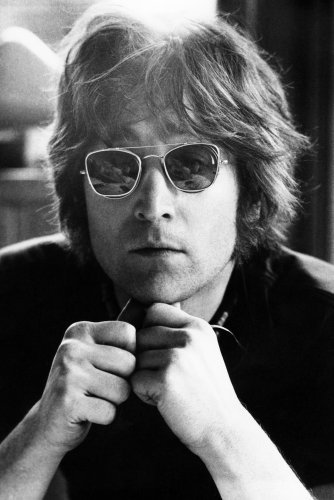
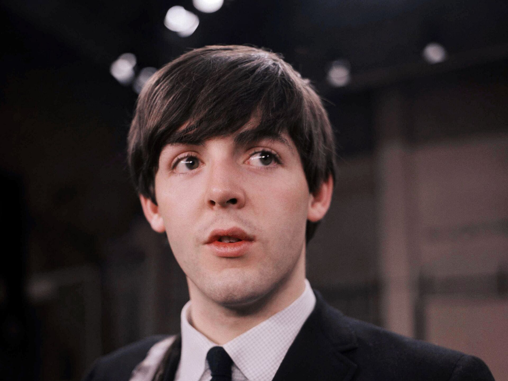
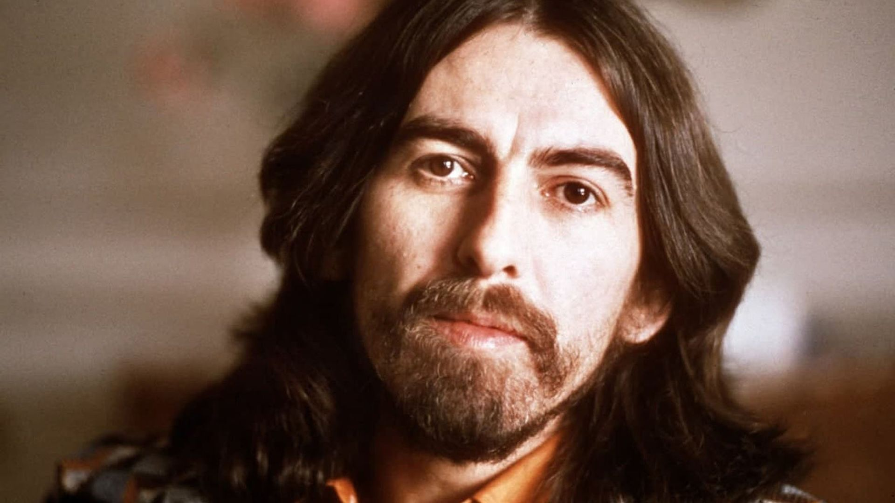
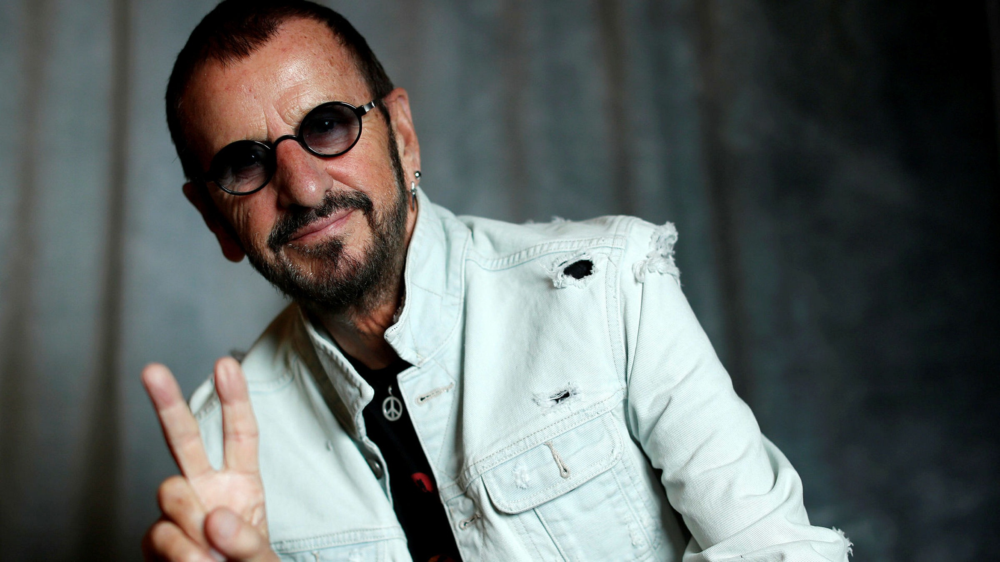

Главная |
Общая информация |
История |
Дискография |
Фильмография |
Источники
Общая информация
Название: "The Beatles" ("Битлз";отдельно участников ансамбля называт "битлами")
Страна:Великобритания (г.Ливерпуль)
Годы: 1960-1970
Состав группы (те, кого весь мир знает как The Beatles):
- Джон Ленон(ритм-гитара, соло-гитара, клавишные, бубен, маракасы, бас-гитара, губная гормошка, вокал)

- Пол Макартни(бас-гитара,клавишные, ударные, гитара, вокал)

- Джордж Харрисон(соло-гитара, ритм-гитара, ситар, бубен, клавишные, вокал)

- Ринго Стар(ударные, ритм-гитара, бубен, маракасы, коубелл, бонги, клавишные, вокал)

Также в разное время в составе группы выступали:
- Пит Бест(ударные, вокал)
- Стюарт Станклифф(бас-гитара, вокал)
- Джимми Никол(ударные)
После распада группы, произошедшего в 1970 году, каждый из её участников начал сольную карьеру.
© Все права защищены.